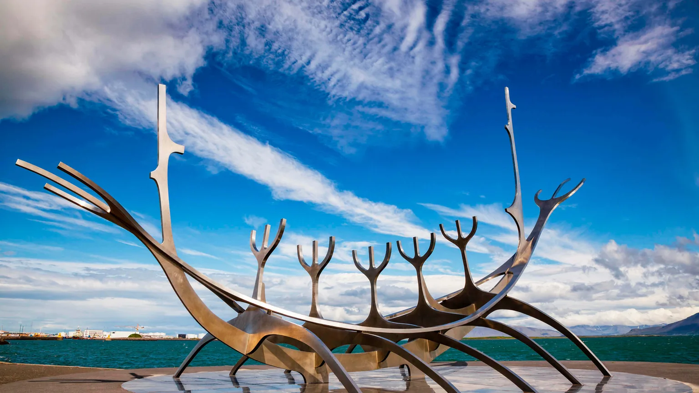
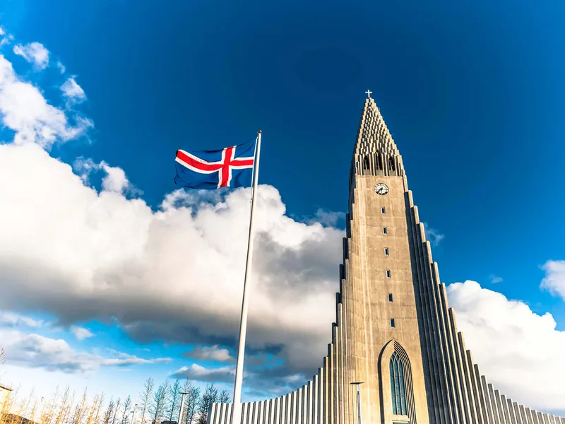
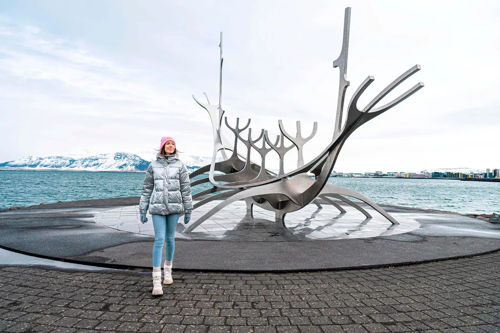
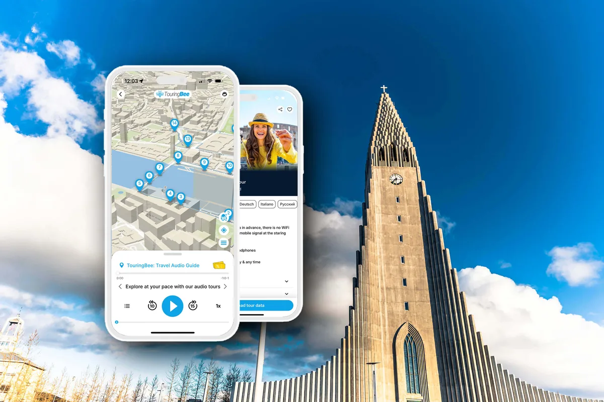

Reykjavik › Un jour à Reykjavik
Reykjavik en un jour : que voir, et un itinéraire qui tient malgré la lumière
Deux contraintes décident de cette journée : les heures de jour dont vous disposez, et 16 h 45. Tout le reste se négocie.
Fin décembre, le soleil passe au-dessus des toits vers 11 h 20 et a déjà disparu à 15 h 30. La dernière montée au clocher de Hallgrímskirkja part à 16 h 45. Votre journée à Reykjavik tient tout entière entre ces deux horaires.
Ce qui suit n'est donc pas une liste de sites, mais un horaire. Le vieux centre se traverse en vingt minutes et le parcours complet fait environ 5 km. Ici, ce ne sont pas les jambes qui lâchent. C'est la lumière, ou une porte fermée depuis un quart d'heure.
Vous pouvez faire toute la journée avec cette seule page. Si vous voulez aussi savoir ce qui se cache derrière les lieux traversés, la balade audio TouringBee suit la même ligne. Vous préparez le reste du séjour ? Commencez par notre guide complet de Reykjavik.
L'essentiel
- À pied
- Environ 5 km, plat sauf la montée de Skólavörðustígur
- Déroulé
- Vieux centre → l'église et son clocher → le front de mer → l'eau chaude
- Horaire à ne pas rater
- 16 h 45 — dernière montée au clocher, du 1er septembre au 31 mai
- Billet du clocher
- 1 500 ISK adulte · 200 ISK enfant 7–16 ans · vendu sur place uniquement
- Bus
- 690 ISK le trajet sur le réseau Strætó
- À réserver
- Le lagon — la seule réservation vraiment à prendre avant de partir
- Le mois le plus difficile à improviser
- Décembre : environ quatre heures de jour exploitables
Faites ce parcours avec l'audioguide
La même ligne à travers le centre, racontée : 27 étapes, 2 h à 2 h 30, carte et audio hors ligne. Vous coupez pour le clocher, le déjeuner ou un musée, et vous reprenez là où vous en étiez.
Audioguide de Reykjavik — 9,99 €Vérifiez d'abord deux choses : le coucher du soleil et le clocher
La première contrainte, c'est le soleil, et il ne fait pas de cadeau. Reykjavik se trouve juste sous le cercle polaire : l'écart entre le plein été et le plein hiver dépasse tout ce que la plupart des voyageurs ont connu ailleurs.
| Mois | Jour exploitable | Ce que ça change pour une journée |
|---|---|---|
| Décembre – janvier | 4 à 5 heures | Un seul bloc en extérieur, pas deux. Le reste se passe de nuit, et ce n'est pas un problème. |
| Février – avril | La lumière revient vite | Tout le parcours de jour, et des nuits encore assez noires pour guetter les aurores. |
| Mai – juillet | Quasiment 24 h sur 24 | Départ à midi ou à neuf heures du soir. La contrainte disparaît ; c'est aussi la haute saison. |
| Août – novembre | La lumière repart vite | Septembre et octobre offrent un bon compromis entre longueur des journées et nuits assez noires pour les aurores. |
La seconde contrainte, c'est le clocher. Hallgrímskirkja reste le seul point haut du centre, et du 1er septembre au 31 mai l'église ferme à 17 h, dernière montée à 16 h 45. En été, ouverture jusqu'à 20 h et clocher jusqu'à 19 h 45. Les billets ne se réservent pas et ne valent que pour le jour de l'achat : impossible donc de caler la visite quand ça vous arrange.
| Billet du clocher | Tarif |
|---|---|
| Adulte | 1 500 ISK |
| Enfant 7–16 ans | 200 ISK |
| Étudiants, seniors 67+, personnes handicapées | 1 300 ISK |
Offices et concerts ferment l'église aux visiteurs sans grand préavis : jetez un œil au programme du jour avant de bâtir votre après-midi autour du clocher.

Matin : le vieux centre
Commencez par Arnarhóll, la petite colline verte au-dessus de la route du port, où la statue du fondateur de la ville regarde la baie. Il n'a pas choisi l'endroit lui-même. Il a laissé quelque chose d'autre choisir à sa place, et c'est une histoire que l'audioguide prend le temps de raconter.
De là, le vieux centre se déroule vers le bas en trois rues à peine. La place Austurvöllur a le parlement d'un côté. Tjörnin, l'étang, porte l'hôtel de ville sur pilotis. Entre les deux se glissent de petits musées, dont celui construit autour d'un mur de maison longue mis au jour sous le trottoir. Rien de tout cela ne prend longtemps. Tout cela se traverse gratuitement.
Deux remarques pratiques. L'Islande fonctionne à la carte bancaire jusqu'à l'excès : on peut y passer une semaine sans toucher un billet, et plusieurs endroits n'acceptent plus les espèces. Et l'eau du robinet est excellente et gratuite partout, donc une gourde vous fait économiser plus que vous ne le croyez.
Midi : la rue arc-en-ciel, puis le clocher
Skólavörðustígur monte de la rue commerçante jusqu'à la porte de l'église, et son dernier pâté de maisons est peint en bandes arc-en-ciel permanentes. C'est l'un des endroits les plus photographiés de Reykjavik. Tôt le matin ou en fin de journée, vous l'avez presque pour vous ; entre onze heures et trois heures en été, non.
Montez au clocher maintenant, ne le gardez pas pour la fin de journée. En hiver, c'est précisément pour cela que la matinée a été resserrée. En été vous avez plus de marge, même si c'est en général plus calme tôt ou près de la dernière montée.
Déjeuner, et la réservation à ne pas oublier
On mange sur Laugavegur et dans les rues qui la bordent. Le classique bon marché, c'est la pylsa islandaise : un hot-dog préparé à partir d'un mélange d'agneau, de porc et de bœuf. Demandez eina með öllu, « avec tout ». En hiver, une soupe d'agneau fait le même office. Les restaurants avec service sont réellement chers : c'est là qu'une journée à Reykjavik cesse d'être bon marché.
Réservez le lagon avant de décoller
Le Sky Lagoon comme le Blue Lagoon fonctionnent par créneaux, et les créneaux du soir, très demandés, peuvent partir longtemps à l'avance. Pour une journée en ville classique, c'est la réservation principale à prendre avant d'arriver.
Voir les billets pour le lagon Comparer excursions et transfertsAprès-midi : le front de mer
La seconde moitié de la journée longe la mer. Harpa, la salle de concert de verre au bord du port, est libre d'accès et mérite cinq minutes d'arrêt à l'intérieur par temps clair. Plus loin sur le chemin de Sæbraut se dresse le Sun Voyager, la sculpture d'acier que tout le monde photographie comme un drakkar. Ce n'en est pas un, et la vraie raison vaut mieux que le mythe.

Puis le vieux port : les bateaux d'observation des baleines, les restaurants de poisson et un navire gris des garde-côtes à quai, avec un passé militaire face à une marine bien plus grande. Allez jusqu'au bout et vous tombez sur le tertre herbeux où se termine le parcours audio.
C'est ici que se joue la seule vraie décision de l'après-midi. Une sortie d'observation des baleines depuis le vieux port prend environ trois heures et avale tout ce qui reste de jour. Cela vaut le coup en été si vous êtes venu pour la faune ; c'est un mauvais calcul en décembre, quand ces trois heures représentent toute votre lumière.
Soirée : d'abord l'eau chaude, ensuite le dîner
Les Islandais finissent la journée dans l'eau plutôt qu'au bar, et vous avez le choix entre deux gammes.
Le Sky Lagoon, c'est la version soignée : au bord de l'océan, à quinze minutes du centre, avec un rituel en sept étapes compris dans le billet. Le forfait Saman démarre autour de 113 € par adulte (57 € pour les jeunes), le forfait Sér, avec vestiaires privés, autour de 136 €.
L'option locale, c'est la piscine municipale géothermale : Sundhöllin en centre-ville, Laugardalslaug pour le complexe complet. Chauffées par le sol, ouvertes tard, à une fraction du prix d'un lagon ; le tarif adulte en vigueur figure sur reykjavik.is. Une règle compte plus que les autres : on se douche soigneusement, sans maillot, avant d'entrer dans l'eau. C'est affiché dans chaque vestiaire, et c'est appliqué.
Trois variantes
Une escale, pas une journée
Si vous avez six ou sept heures entre deux vols, laissez tomber la partie front de mer. Bus depuis Keflavík, vieux centre et clocher, déjeuner sur Laugavegur, bus retour. Cela tient dans une escale courte, transferts compris, et vous offre quand même la meilleure vue de la ville.
Une journée de décembre
Comprimez tout l'extérieur entre 11 h et 15 h 30 et acceptez que le port, le dîner et la piscine se passent de nuit. Ce n'est pas une dégradation : les lumières du port sur l'eau valent mieux que la version diurne. Et la longue moitié sombre de la journée est votre chance de voir une aurore, si la couverture nuageuse et l'activité solaire s'y prêtent. Le tronçon sombre du front de mer de Sæbraut est le plus simple depuis la ville. Le phare de Grótta, à un trajet de bus vers l'ouest, est plus noir encore. Mais ni l'un ni l'autre ne remplace une vraie sortie loin des lumières urbaines.
Un jour de pluie et de vent de travers
Le temps change d'heure en heure et c'est le vent qui fait les dégâts. Un mauvais jour, inversez le plan : musées et piscine au milieu de la journée, la marche dans la fenêtre qui s'ouvre. Le parapluie ne sert pas à grand-chose ici : une bonne rafale le retourne. Une veste imperméable à capuche et un bonnet sont plus fiables, quel que soit le mois.
L'audioguide
Voir le parcours est une chose. Comprendre pourquoi Reykjavik s'est installée précisément là, ce que représente vraiment le Sun Voyager et comment un pays aussi petit a pu tenir tête à bien plus fort que lui, c'en est une autre.

Audioguide TouringBee de Reykjavik
- Fonctionne entièrement hors ligne une fois téléchargé — carte et illustrations comprises, aucune donnée nécessaire en chemin
- À votre rythme. Coupez pour déjeuner ou visiter un musée et reprenez au même endroit deux heures plus tard
- Raconté par un personnage — un pêcheur de Reykjavik qui a du temps avant de reprendre la mer
- Un seul paiement. Pas de groupe, pas d'horaire, pas de guide qui vous attend
Ce que coûte la journée
| Poste | Coût |
|---|---|
| Parcourir la ville à pied | Gratuit |
| Audioguide, paiement unique | 9,99 € |
| Clocher de Hallgrímskirkja, adulte | 1 500 ISK |
| Trajet simple Strætó | 690 ISK |
| Piscine municipale | Une fraction du prix d'un lagon |
| Sky Lagoon, forfait Saman | à partir d'environ 113 € |
| Observation des baleines, ~3 h | Tarif selon l'opérateur ; le vrai coût, c'est la lumière |
La ville en elle-même n'est pas chère. Le budget grimpe nettement dès qu'on ajoute un lagon, des excursions hors de la ville et des dîners au restaurant.
Cinq erreurs qui coûtent la journée
- Garder le clocher pour la fin en hiver. Dernière montée à 16 h 45, de septembre à mai, et billets vendus sur place uniquement.
- Ajouter le Cercle d'Or à une journée en ville. C'est huit heures de route. Il lui faut sa propre journée.
- Consacrer l'essentiel du jour de décembre à un bateau. Trois heures en mer quand vous avez quatre heures de lumière.
- Compter sur un parapluie. Le vent le retourne. Des couches, une capuche et un bonnet à la place.
- Prendre le lagon pour un endroit où l'on entre librement. Ce sont des créneaux, et ceux du soir partent en premier.
Questions fréquentes
Une journée suffit-elle pour Reykjavik ?
Pour la ville elle-même, oui. Le vieux centre se traverse en vingt minutes et le parcours à pied classique fait environ 5 km : une journée le couvre largement, pauses comprises. Une journée ne suffit pas pour y ajouter le Cercle d'Or ou la côte sud, qui demandent chacun une journée entière, passée en grande partie en voiture.
À quelle heure commencer en hiver ?
En décembre, visez 10 h 30 pour être dehors, et tenez 16 h 45 comme limite absolue : c'est la dernière montée au clocher de Hallgrímskirkja de septembre à mai. Tout ce qui vient après la nuit tombée reste faisable — le port, la piscine, le dîner. Le panorama et les photos, non.
L'audioguide sert à quoi si j'ai déjà cet itinéraire ?
Cette page répond à la question où et quand : les horaires, les réservations, le plan de repli quand il pleut. L'audioguide répond à la question de ce que vous avez sous les yeux et pourquoi c'est intéressant — 27 histoires sur la même ligne. L'itinéraire sert donc de plan de journée, et TouringBee de récit en chemin.
Faut-il une voiture pour une journée à Reykjavik ?
Non. La journée en ville se fait à pied, sur du plat, sauf une montée. Les bus Strætó couvrent le reste pour 690 ISK le trajet. La voiture ne devient rentable qu'une fois sorti de la ville.
Combien coûte une journée à Reykjavik ?
Marcher ne coûte rien. Les frais fixes sont modestes : 1 500 ISK pour le clocher et 690 ISK le trajet en bus. Ce qui fait grimper le total, c'est le lagon et le dîner — à eux deux, ils peuvent dépasser tout le reste.
Que faut-il réserver avant de partir ?
Pour une journée en ville, surtout le lagon : le Sky Lagoon comme le Blue Lagoon fonctionnent par créneaux, et les créneaux du soir, très demandés, peuvent partir longtemps à l'avance. En été, ajoutez la sortie d'observation des baleines la veille. Le reste se décide le matin même.
Pour aller plus loin
- Le guide complet de Reykjavik — le parcours, les excursions et les saisons
- Tous les guides de Reykjavik — ce qui est publié et ce qui arrive
En résumé
Reykjavik donne presque tout ce qu'elle a en une journée de marche. Les distances ne seront jamais le problème. La lumière, si.
Vérifiez donc l'heure du coucher du soleil, ne gardez pas le clocher pour le soir, et faites le reste à votre rythme. Et si vous voulez comprendre la ville en chemin plutôt que simplement la regarder, emportez l'audioguide TouringBee de Reykjavik : 27 étapes, 2 h à 2 h 30, entièrement hors ligne.
Vingt-sept étapes sur la même ligne
Cette page vous amène au bon endroit à la bonne heure. L'audioguide vous dit ce que vous avez devant vous.
Certains liens de cette page sont des liens d'affiliation : si vous réservez via ces liens, nous pouvons percevoir une commission, sans surcoût pour vous. Tarifs et horaires vérifiés sur les sites des opérateurs en septembre 2026 ; ils changent sans préavis, vérifiez avant de partir. Clocher : hallgrimskirkja.is. Bus : straeto.is. Lagon : skylagoon.com.